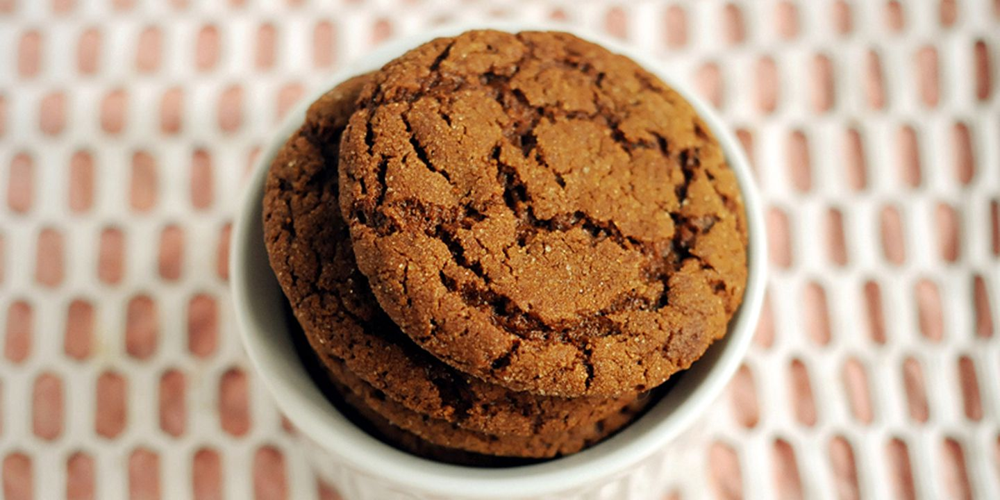

Maple Ginger Cookies

Description
I'm a fan of making these cookies on the chewier side, but this recipe is versatile and lets you go for that crackly ginger snap if you let it bake a little longer.
Ingredients
- 3c / 420g flour
- 2 tsp baking soda
- 2 tsp cinnamon
- 2 tsp ginger
- 1/2 tsp turmeric
- 1/4 tsp salt
- 3/4c (1.5 sticks) butter, at room temperature
- 1 1/4c / 250g light brown sugar
- 1 large egg, at room temperature
- 1/3c / 80 mL maple syrup
- 1/2c / 100g turbinado sugar
Steps
- In a medium mixing bowl, whisk together the flour, baking soda, cinnamon, ginger, turmeric, and salt.
- In the bowl of a stand mixer fitted with the paddle attachment, combine the butter and brown sugar. (Alternatively, use a large mixing bowl and electric handheld mixer.) Beat on medium speed, scraping the sides of the bowl halfway through, until smooth and fluffy, 2 to 3 minutes. Turn the mixer off and add the egg and maple syrup. Mix on medium speed until fluffy and lightened in color, 2 to 3 minutes. With the mixer running on low speed, gradually add the flour mixture, beating just until combined and a soft dough forms, 1 to 2 minutes. Wrap the mixing bowl in plastic wrap and refrigerate for at least 2 hours and up to overnight.
- Set 2 oven racks at the upper-middle and lower-middle positions and preheat the oven to 350°F / 175°C. Line 3 baking sheets (or as many as you have) with parchment paper or nonstick baking mats. Place the turbinado sugar in a medium mixing bowl.
- Using a 1 1/2-inch / 4cm cookie scoop (or 2 rounded tablespoons), portion out the dough and roll into balls. Roll the balls in the turbinado sugar and place at least 3 inches / 7.5cm apart on the prepared baking sheets (6 per tray).
- Bake two pans at the same time, swapping the top sheet to the bottom rack and bottom sheet to the top midway through baking, until the tops crack and the cookies are lightly browned around the edges, 13 to 14 minutes. Bake the remaining tray on either rack. (If reusing one of the baking sheets, let it cool for at least 15 minutes before reusing.) Let cool completely on the baking sheets.